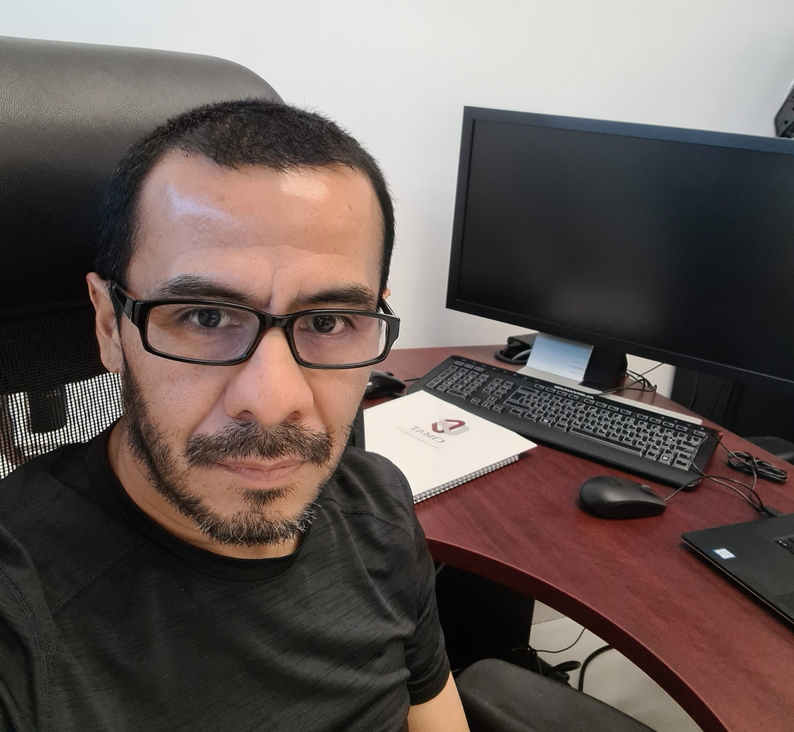

Dr. Víctor Muñiz Sánchez
Research Associate

Bachelor's degree in Industrial Engineering from the Technological Institute of Puebla. Master's degree in Science with a specialization in Computer and Industrial Mathematics from the Center for Research in Mathematics (CIMAT). Doctorate in Science with a specialization in Computer Science, also from CIMAT. Currently, he is a senior academic technician (level C) at CIMAT Monterrey Unit, where he conducts research and collaboration in areas such as machine/deep learning, natural language processing, spatio-temporal statistics, and complex data analysis. He is a member of the National System of Researchers with level 1 accreditation.